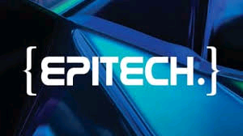

EPITECH BENIN

L'Epitech est l'école de l'expertise informatique qui forme depuis 020 ans les experts du secteur. Elle permet de transformer une passion pour l'Informatique en une expertise débouchant sur des emplois à fort potentiel. Les formations d'Epitech reposent sur un modele pédagogique novateur et unique qui met l'accent sur trois qualités de plus en plus exigées : l'adaptabilité, l'auto-progression, et le sends du projet. Cette méthode solidaire et ouverte vise à dessiner un futur différent pour l'informatique et former au meilleur de l'innovation.
Les MSC Pro sont nos cursus en rythme alterné d'une durée de deux ou trois ans , selon qu'elle est intégrée en année de pré-MSC ou M1. Elle est ouverte aux titulaires d'un Bac+2 informatique ou d'un Bac+3 informatique ou scientifique.